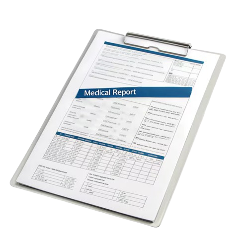
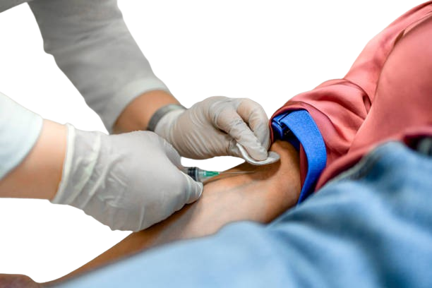
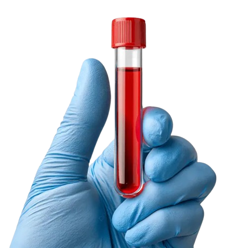
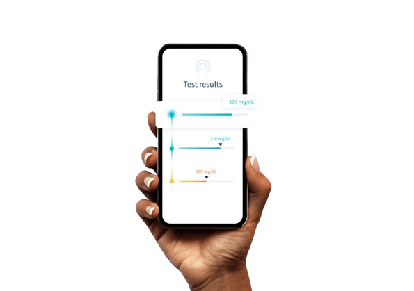

Diagnostic Care You Can Trust, Close to Home
Accredited laboratory services supporting [Hospital Name] — delivering accurate, timely results for the healthcare decisions that matter most.
60+
Tests offered
24hrs
Most Turnaround
7 Days
open weekly
MLSCN
Accredited
TEST CATALOGUE
Our laboratory Services
All essential investigations needed to support diagnosis, monitoring, and treatment in our hospital and the wider community.
Understanding Your Fasting Blood Sugar (FBS)
A Fasting Blood Sugar test measures the amount of glucose in your blood after an overnight fast. It is one of the most reliable ways to screen for prediabetes and type 2 diabetes. If you have been experiencing frequent thirst, fatigue, or blurry vision, a simple morning blood draw can give your doctor the data needed to keep your metabolic health on track.
View biochemistry options →Why a Full Blood Count (FBC) is Your Baseline Health Map
Your blood cells tell an incredible story about your overall wellness. An FBC evaluates your red blood cells for anemia, white blood cells for hidden infections or immune responses, and platelets for clotting health. It is the most frequently requested baseline investigation because it captures changes in your body long before physical symptoms appear.
View haematology options →How Often Should You Run Routine Lab Checks?
Most health conditions, including high cholesterol and early kidney strain, do not show warning signs in their initial stages. Medical consensus recommends comprehensive laboratory screening at least once a year for adults over 30. Regular screening captures small biological changes early, turning potential emergencies into easily manageable health updates.
Learn about routine checks →Secure, Confidential Screening on Your Terms
Early detection is everything when it comes to infectious diseases, reproductive wellness, or metabolic changes. MedLab provides entirely confidential screening environments for rapid pregnancy confirmation, infectious panels, and routine dipstick screenings. Get precise results delivered quickly to your private online patient portal without the long hospital wait times.
Explore screening panels →How it works

Doctor's request
Obtain a laboratory request form from your attending physician or nurse.
Registration
Present at our reception desk with the request form and valid ID. Pay applicable fees.

Sample Collection
Our trained phlebotomists collect the required specimen safely and with minimal discomfort..

Analysis
Samples are processed and analysed by our qualified laboratory scientists.

Results
Collect printed results at the counter or access them via our online portal using your receipt number.
Patient Portal
Access Your Test Results Online
Securely retrieve your laboratory report anytime using your unique receipt number.
Results are released only after review by a qualified scientist
PDF download available for printing or sharing with your doctor
Results are securely stored for 12 months
Critical values are telephoned to the requesting clinician immediately
Need help? Call us directly during working hours